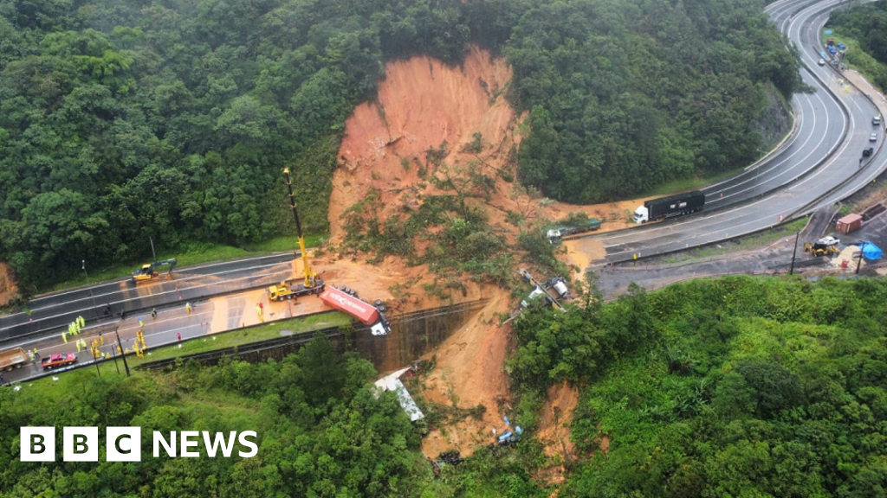

A natural disaster is a disaster with links to natural hazards. A natural disaster can cause loss of life or damage property, and typically leaves economic damage in its wake. The severity of the damage depends on the affected population's resilience and on the infrastructure available.